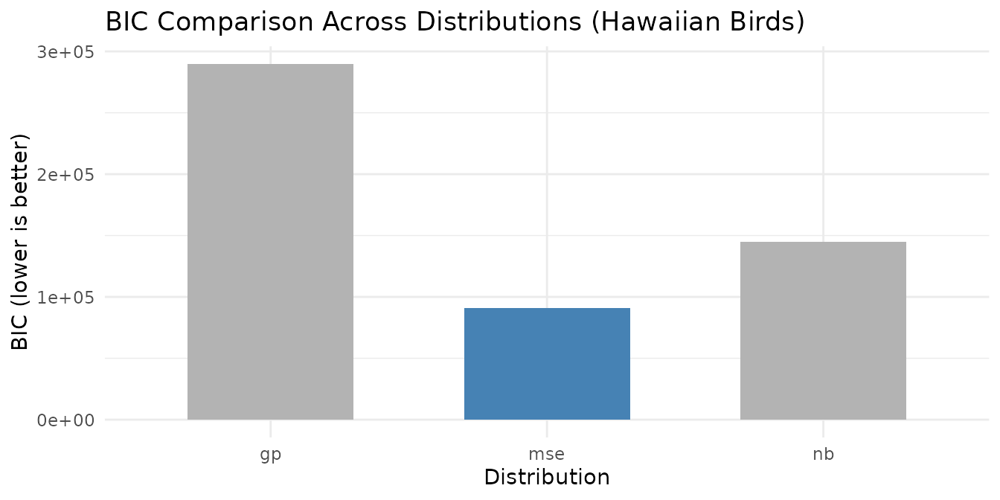

Motivation
Standard NMF minimizes mean squared error, implicitly assuming Gaussian noise with constant variance. This assumption fails for many real datasets: count data (gene expression, species surveys) has variance proportional to the mean; heavy-tailed data has extreme outliers that dominate the MSE objective; and some data has excess zeros far beyond what any single distribution predicts (e.g., single-cell RNA-seq dropout).
RcppML unifies distribution-specific NMF via Iteratively Reweighted Least Squares (IRLS): at each NMF iteration, the least squares subproblem is re-weighted to match the chosen distribution’s variance function. The result is better fit, more interpretable factors, and statistically principled modeling.
API Reference
Distribution Selection in nmf()
Use the loss parameter to specify the error
distribution:
nmf(data, k, loss = "gp", ...)| Distribution | loss = |
Use Case | |
|---|---|---|---|
| Gaussian | "mse" |
constant | Dense continuous data |
| Generalized Poisson | "gp" |
Overdispersed counts | |
| Negative Binomial | "nb" |
Standard count data | |
| Gamma | "gamma" |
Positive continuous data | |
| Inverse Gaussian | "inverse_gaussian" |
Heavy right tails | |
| Tweedie | "tweedie" |
Hybrid count/continuous |
Dispersion Control
The dispersion parameter controls how dispersion is
estimated:
| Value | Description |
|---|---|
"per_row" |
One dispersion parameter per feature (default) |
"per_col" |
One per sample |
"global" |
Single global dispersion |
"none" |
No dispersion estimation |
Zero-Inflation
For data with excess zeros beyond what the chosen distribution predicts:
nmf(data, k, loss = "gp", zi = "row", ...)zi = |
Description |
|---|---|
"none" |
No zero-inflation modeling (default) |
"row" |
Per-row (per-feature) zero-inflation probability |
"col" |
Per-column (per-sample) zero-inflation probability |
Diagnostic Functions
-
auto_nmf_distribution(data, k, distributions, criterion)— fit multiple distributions, compare via AIC/BIC -
score_test_distribution(data, model, powers)— score test for variance power without refitting -
diagnose_zero_inflation(data, model, threshold)— test for excess zeros -
diagnose_dispersion(data, model)— recommend dispersion granularity
Theory
Variance-Mean Relationship
Each distribution assumes a specific relationship between the variance and the mean: . Gaussian (p=0) has constant variance. Poisson-family (p=1) has variance proportional to mean. Gamma (p=2) has variance proportional to mean squared. The correct assumption determines how residuals are weighted — high-mean entries get downweighted for count data, matching the natural heteroscedasticity.
IRLS
At each NMF iteration, IRLS computes weights and solves the weighted NNLS problem. This iterative reweighting converges to the maximum likelihood estimate for the chosen distribution.
Dispersion
Dispersion controls how much the observed variance deviates from the base variance function. For Negative Binomial, the dispersion parameter controls overdispersion: . For Generalized Poisson, controls extra-Poisson variation.
The three dispersion modes control granularity:
-
per_row(default): Each feature (row) gets its own dispersion . Appropriate when features have different noise levels — e.g., highly-expressed genes have different variance structure than lowly-expressed genes. -
per_col: Each sample (column) gets its own dispersion . Appropriate when samples have different quality — e.g., cells with different sequencing depth or capture efficiency. -
global: A single scalar dispersion for the entire matrix. Appropriate for homogeneous data where all features and samples have similar noise characteristics.
Guidance: For gene expression data,
per_row is typically best (genes vary enormously in
expression level and noise). For batch-variable data,
per_col captures sample-level quality differences. Use
diagnose_dispersion() to choose empirically.
Zero-Inflation
The ZI mixture model decomposes each observation as: . The EM algorithm alternates between estimating zero-inflation probabilities and updating NMF factors — capturing dropout or structural zeros that the base distribution cannot explain.
Recommended Workflow
When modeling complex data, build up complexity incrementally rather than estimating everything simultaneously. Estimating distribution, dispersion, and zero-inflation together creates identifiability issues — the model may trade off between a more flexible distribution and higher zero-inflation, producing unstable results.
-
Select distribution: Use
auto_nmf_distribution()orscore_test_distribution()to find the best variance function. Start withdispersion = "none"andzi = "none". -
Diagnose dispersion: Use
diagnose_dispersion()to determine whether per-row, per-col, or global dispersion is needed. -
Test for zero-inflation: Use
diagnose_zero_inflation()to check for excess zeros. - Combine: Fit the final model with the chosen distribution, dispersion mode, and ZI setting.
Tip: The
distributionparameter (available inauto_nmf_distribution()) can be set to"auto"for automatic distribution selection. This evaluates multiple candidates and selects the best one by the specified criterion (default: BIC).
Information Criteria
Distribution comparison uses standard model selection criteria:
- NLL (Negative Log-Likelihood): The negative log-likelihood of the data under the fitted model. Lower = better fit.
- AIC (Akaike Information Criterion): , where is the number of parameters. Penalizes model complexity lightly.
- BIC (Bayesian Information Criterion): , where is the number of observations. Penalizes complexity more strongly than AIC, preferring simpler models. BIC is generally preferred for distribution selection.
Note: NLL and AIC/BIC values can be negative — this reflects the scale of the log-likelihood, not an error.
Worked Examples
Example 1: Distribution Auto-Selection on Count Data
The hawaiibirds dataset contains species frequency
counts from Hawaiian bird surveys — overdispersed count data where
Gaussian assumptions are inappropriate.
data(hawaiibirds)
result <- auto_nmf_distribution(hawaiibirds, k = 8,
distributions = c("mse", "gp", "nb"),
criterion = "bic", seed = 42,
maxit = 30)
comp <- result$comparison
comp_display <- data.frame(
Distribution = comp$distribution,
NLL = round(comp$nll, 1),
df = comp$df,
AIC = round(comp$aic, 1),
BIC = round(comp$bic, 1),
Selected = ifelse(comp$selected, "***", "")
)
knitr::kable(
comp_display,
caption = paste0("Distribution comparison on hawaiibirds (BIC criterion). Best: ", result$loss, ".")
)| Distribution | NLL | df | AIC | BIC | Selected |
|---|---|---|---|---|---|
| mse | -11136.2 | 10929 | -414.4 | 90687.0 | *** |
| gp | 87417.5 | 11111 | 197056.9 | 289675.5 | |
| nb | 15109.6 | 11111 | 52441.3 | 145059.9 |
ggplot(comp, aes(x = distribution, y = bic, fill = selected)) +
geom_col(width = 0.6) +
scale_fill_manual(values = c("FALSE" = "grey70", "TRUE" = "steelblue"), guide = "none") +
labs(title = "BIC Comparison Across Distributions (Hawaiian Birds)",
x = "Distribution", y = "BIC (lower is better)") +
theme_minimal()
BIC selects the best-fitting distribution for the Hawaiian bird count data. Note that the BIC-preferred distribution may not always be a count-based model: if the variance-mean relationship in the data is closer to constant (Gaussian), BIC will prefer MSE over more complex alternatives. This is informative — it tells you whether the additional complexity of a count-based loss is warranted for your data. Higher BIC values for count distributions indicate that the extra dispersion parameters are not justified by the improvement in fit.
# Diagnose dispersion granularity for the best model
best_model <- result$models[[result$loss]]
disp_diag <- diagnose_dispersion(hawaiibirds, best_model)
disp_df <- data.frame(
Property = c("Recommended mode", "Global φ", "Row CV", "Col CV"),
Value = c(disp_diag$mode, round(disp_diag$global_phi, 4),
round(disp_diag$row_cv, 4), round(disp_diag$col_cv, 4))
)
knitr::kable(disp_df, caption = "Dispersion diagnostics for hawaiibirds")| Property | Value |
|---|---|
| Recommended mode | per_row |
| Global φ | 4e-04 |
| Row CV | 1.9884 |
| Col CV | 0.867 |
Example 2: Score Test Diagnostics
The score test evaluates the variance-power family without refitting — a fast diagnostic to determine which distribution matches the data’s variance structure.
model_base <- nmf(hawaiibirds, k = 8, seed = 42, tol = 1e-3, maxit = 30)
scores <- score_test_distribution(hawaiibirds, model_base)
score_df <- scores$scores
score_df$T_stat <- round(score_df$T_stat, 4)
score_df$abs_T <- round(score_df$abs_T, 4)
knitr::kable(
score_df,
caption = paste0("Score test results. Best power: p = ", scores$best_power,
" (", scores$best_distribution, ").")
)| power | T_stat | abs_T | distribution |
|---|---|---|---|
| 0 | -9.786000e-01 | 9.786000e-01 | gaussian |
| 1 | 4.389000e-01 | 4.389000e-01 | gp |
| 2 | 1.124376e+06 | 1.124376e+06 | gamma |
| 3 | 1.115849e+12 | 1.115849e+12 | inverse_gaussian |
The power with the smallest best matches the observed variance-mean relationship. The score test evaluates the variance power family :
- Power 0 (Gaussian): constant variance — if rejected (large ), the data has heteroscedastic noise.
- Power 1 (Poisson/GP): variance proportional to mean — appropriate for count data.
- Power 2 (Gamma): variance proportional to mean-squared — appropriate for heavy-tailed continuous data.
A negative T-statistic at a given power suggests the model over-estimates variance relative to the data at that power — the assumed variance function grows too quickly with the mean. A positive T-statistic suggests under-estimation — the data has more variance than the model predicts. The best power is the one where the T-statistic is closest to zero — the variance assumption matches reality. In practice, small absolute T-statistics (< 0.1) across multiple powers suggest the data’s variance-mean relationship is well-behaved and the choice of distribution matters less.
if (!is.null(scores$nb_diagnostic)) {
nb_msg <- if (scores$nb_diagnostic$overdispersed) {
"Substantial overdispersion detected (T_NB > 0.1). NB or GP may be preferable to Poisson."
} else {
"No strong overdispersion beyond Poisson detected."
}
}Example 3: Zero-Inflation Detection and Modeling
Single-cell RNA-seq data has extreme sparsity with “dropout” zeros
beyond what any count distribution predicts. We use pbmc3k,
a variance-selected subset (8,000 genes × 500 cells) of the full 10x
Genomics PBMC 3k dataset.
Dropout is a pervasive artifact of scRNA-seq: during library preparation, low-abundance mRNAs are stochastically lost at the capture and reverse-transcription steps. The result is that genes with moderate true expression are frequently observed as zero — not because the cell lacks the transcript, but because the assay failed to detect it. This produces “excess zeros” far beyond what any single count distribution (Poisson, NB, GP) can explain. Capture efficiency also varies across cells, contributing to per-sample zero-inflation.
Not all sparse data has excess zeros. For example,
hawaiibirdsis 97% sparse butdiagnose_zero_inflation()finds an excess zero rate below 1% — the zeros are well-explained by the count distribution itself. Zero-inflation modeling adds value only when the diagnostic confirms structural excess zeros.
data(pbmc3k, package = "RcppML")
tmp <- tempfile(fileext = ".spz")
writeBin(pbmc3k, tmp)
counts <- st_read(tmp)
sparsity_pct <- round(100 * (1 - Matrix::nnzero(counts) / prod(dim(counts))), 1)
cat("Dimensions:", nrow(counts), "×", ncol(counts), "\n")
#> Dimensions: 13714 × 2638The dataset has 93.8% zeros — far more than any single count distribution can explain.
model_gp <- nmf(counts, k = 8, loss = "gp", seed = 42, tol = 1e-3, maxit = 30)
zi_diag <- diagnose_zero_inflation(counts, model_gp)
zi_summary <- data.frame(
Metric = c("Excess Zero Rate", "Zero-Inflation Detected", "Recommended ZI Mode"),
Value = c(
round(zi_diag$excess_zero_rate, 4),
as.character(zi_diag$has_zi),
zi_diag$zi_mode
)
)
knitr::kable(zi_summary, caption = "Zero-inflation diagnostics on pbmc3k (8,000 genes × 500 cells).")| Metric | Value |
|---|---|
| Excess Zero Rate | 0.2287 |
| Zero-Inflation Detected | TRUE |
| Recommended ZI Mode | col |
if (zi_diag$has_zi && zi_diag$zi_mode != "none") {
model_zi <- nmf(counts, k = 8, loss = "gp", zi = zi_diag$zi_mode,
seed = 42, tol = 1e-3, maxit = 30)
loss_gp <- evaluate(model_gp, counts, loss = "mse")
loss_zi <- evaluate(model_zi, counts, loss = "mse")
improvement <- round(100 * (1 - loss_zi / loss_gp), 1)
loss_comp <- data.frame(
Model = c("GP", paste0("GP + ZI (", zi_diag$zi_mode, ")")),
`MSE` = round(c(loss_gp, loss_zi), 4),
check.names = FALSE
)
knitr::kable(loss_comp, caption = "Reconstruction error: GP vs. GP with zero-inflation.")
}Next Steps
-
Rank selection with distributions: Cross-validate
with
loss = "gp"or"nb". See the Cross-Validation vignette. - Factor interpretation: Combine distribution-aware NMF with consensus clustering. See the Clustering vignette.
- Core NMF mechanics: For Gaussian/MSE NMF fundamentals, see NMF Fundamentals.